Стенд для контроля напряжения смещения нуля операционных усилителей и оценки его температурной зависимости
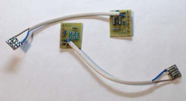
1. Введение
Напряжение смещения нуля операционного усилителя (ОУ) и его температурный дрейф зачастую являются определяющими параметрами при построении электронных схем, особенно прецизионных усилителей постоянного тока или напряжения. В паспортных данных ОУ обычно указывается некоторый диапазон, в который попадают его вышеупомянутые характеристики, но точное значение параметра конкретного ОУ при этом неизвестно, а его знание может оказаться желательным. Кроме того, могут попадаться поддельные микросхемы с существенно худшими параметрами, и их необходимо отбраковать. Также при наличии достаточно больших партий микросхем можно сделать отбор наиболее подходящих для конкретного устройства или отобрать ОУ с хорошими параметрами из более дешевых вариантов. Для этих целей желательно иметь стенд, позволяющий контролировать вышеуказанные характеристики ОУ. Данный стенд может быть по возможности наиболее простым, чтобы до минимума сократить расходы на его изготовление и эксплуатацию.
2. Принцип работы и конструкция стенда
Принцип работы стенда для проверки напряжения смещения нуля ОУ показан на схеме на рис. 2.1 [1]. Проверяемый ОУ включается в режиме инвертирующего усилителя, вход которого подключен ко общему проводу. Напряжение питания ОУ двухполярное (U+ и U-). Выходное напряжение ОУ (на выходе OUT относительно общего провода) определяется напряжением смещения нуля ОУ и коэффициентом усиления, определяемом отношением сопротивлений R2/R1 (с обратным знаком). Если выбрать R2/R1 = 1000, то напряжение на выходе OUT будет в 1000 раз больше напряжения смещения (и с обратным знаком) и может быть легко измерено практически любым мультиметром, имеющим милливольтовый (200 мВ, 2000 мВ) диапазон. Чтобы определить зависимость напряжения смещения нуля от температуры, можно подогреть ОУ, для чего удобно использовать резисторный нагреватель R1R2R3R4, подключаемый к тем же источникам питания, от которых питается ОУ. Для быстроты оценки предпочтительный нагрев составляет около 10 0C. Его можно задать подбором сопротивлений резисторного нагревателя.
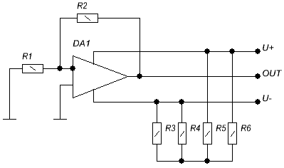
Рис. 2.1. Схема электрическая принципиальная, иллюстрирующая принцип работы стенда для проверки напряжения смещения нуля ОУ.
Простой стенд для проверки ОУ состоит из двух узлов - печатных плат, одна из которых предназначена для работы микросхемы в режиме инвертирующего усилителя с коэффициентом усиления -1000 после ее установки в соответствующий разъем, а вторая плата является резисторным нагревателем, обеспечивающим нагрев проверяемой микросхемы примерно на 10 0C. Схема электрическая принципиальная стенда с резисторным нагревателем показана на рис. 2.2. Коэффициент усиления определяется соотношением сопротивлений резисторов R2 и R1. Питание стенда осуществляется от двухполярного источника напряжением -5 В и +5 В [2, 3]. При необходимости напряжение питания можно изменять, но, как показывает практика, в этом нет необходимости - изменение измеряемых параметров при изменении напряжения питания, как правило, невелико. Температура нагрева ОУ при заданном напряжении питания задается подбором резисторов R3R4R5R6.
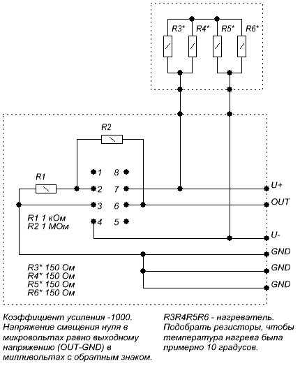
Рис. 2.2. Схема электрическая принципиальная стенда для контроля напряжения смещения нуля ОУ и оценки его температурной зависимости.
Эскизы печатных плат стенда и резисторного нагревателя приведены на рис. 2.3 и 2.4. На печатной плате стенда устанавливается либо разъем под корпус DIP-8, либо переходной адаптер для корпусов SO-8/SOP-8/MSOP-8/TSSOP-8/SOIC-8. Печатная плата резисторного нагревателя сделана из двухстороннего фольгированного стеклотекстолита. На одной ее стороне смонтированы нагревательные резисторы, обеспечивающие нагрев платы через свои выводы, а другая со сплошной металлизацией служит теплопередающим элементом при прижиме ее к корпусу ОУ.
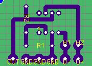
Рис. 2.3. Эскиз печатной платы стенда для контроля напряжения смещения нуля ОУ и оценки его температурной зависимости. Односторонний фольгированный стеклотекстолит толщиной 1.0 ... 1.5 мм. Размер платы 35 х 25 мм2.
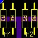
Рис. 2.4. Эскиз печатной платы резисторного нагревателя стенда. Двухсторонний фольгированный стеклотекстолит толщиной 1.0 ... 1.5 мм. Размер платы 15 х 15 мм2. Нижняя сторона имеет сплошную металлизацию.
Внешний вид стендов в различном исполнении показан на рис. 2.5 и 2.6. Плата резисторного нагревателя подключается к плате стенда гибким кабелем.
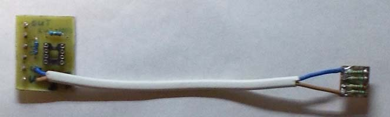
Рис. 2.4. Стенд с разъемом под корпус DIP-8.
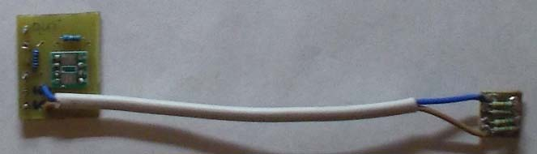
Рис. 2.5. Стенд с переходным адаптером с DIP-8 на SO-8/SOP-8/MSOP-8/TSSOP-8/SOIC-8.
При необходимости по тому же принципу могут быть изготовлены стенды и под другие типоразмеры корпусов ОУ.
3. Способ применения стенда
Микросхема ОУ вставляется в разъем DIP-8 или припаивается к дорожкам переходного адаптера SO-8/SOP-8/MSOP-8/TSSOP-8/SOIC-8 в соответствии с цоколевкой. Двухполярный источник питания +5 В подключается к соответствующим контактам стенда. Выход стенда соединяется с мультиметром с диапазоном измерения 200 или 2000 мВ (можно DT830B, DT832 или аналогичный). Рабочий режим большинства ОУ устанавливается практически сразу без задержки на прогрев. Показания мультиметра в милливольтах соответствуют напряжению смещения нуля ОУ в микровольтах с обратным знаком. Для изменения температуры ОУ предварительно нагретый резисторный нагреватель прижимается нижней стороной к его корпусу. При этом выходное напряжение ОУ изменяется на некоторую величину за время, обычно не превышающее одной минуты. Изменение выходного напряжения ОУ в милливольтах соответствует изменению напряжения смещения нуля в микровольтах при изменении температуры на 10 0C с обратным знаком. Чтобы найти изменение напряжения смещения нуля в расчете на 1 0C, полученное значение надо разделить на 10 и изменить знак на противоположный.
4. Приложение: эскизы 8-выводных корпусов
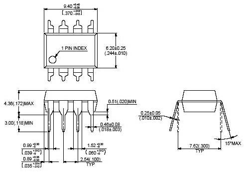
Рис. 4.1. Корпус DIP-8.
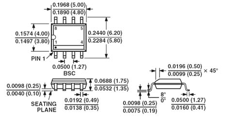
Рис. 4.2. Корпус SO-8.
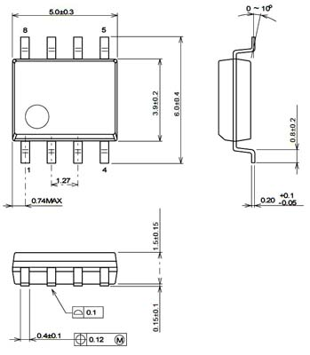
Рис. 4.3. Корпус SOP-8 (пластиковый).
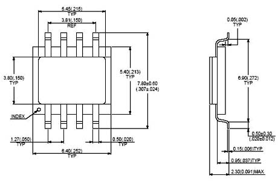
Рис. 4.4. Корпус SOP-8 (керамический).
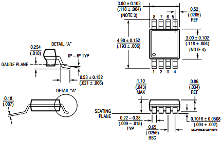
Рис. 4.5. Корпус MSOP-8.
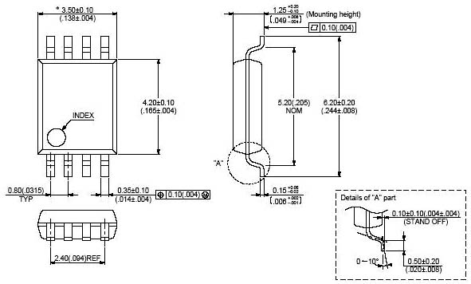
Рис. 4.6. Корпус SSOP-8.
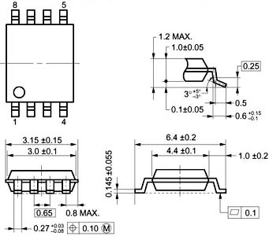
Рис. 4.7. Корпус TSSOP-8.
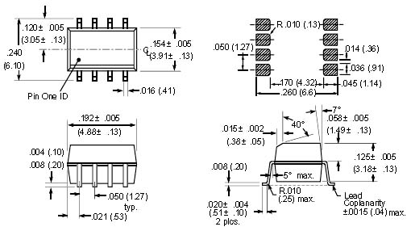
Рис. 4.8. Корпус SOIC-8.
Ссылки:
23.10.2023
Альтернативные источники
энергии
Компьютеры и
Интернет
Магнитные поля
Механотронные системы
Перспективные
разработки
Электроника и технология